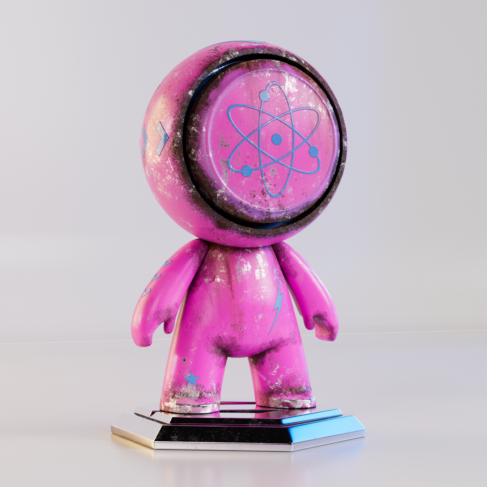

Projects
Tyrande Whisperwind
I used a pre-made level called Dreamscape made by PolyArt Studio.
I really enjoyed sculpting the face in Zbrush. I used to love drawing different faces when I was young, sculpting faces in 3D makes it even more fun.
In the future I will continue on this character and make a face rig.
Tools used: Maya, ZBrush, Substance 3D Painter, Unreal Engine.


Fantasy Tree
The building was only made in Maya and Substance 3D Painter, so no sculpting was made on it.

Iceland — Group Project
I made the house called "torvhus", with some help with making the walls, since we didn't have alot of time so we had to cooperate a lot. I also made a viking axe. We used GitHub to push our changes we did to the Unreal Engine project.


Car Engine

Meet Mat

Contact
Email: lovisa.lehmus@gmail.com
ArtStation: lovisalehmus
LinkedIn: Lovisa Lehmus